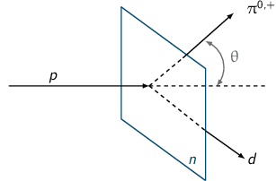

TD5 : Isospin – des quarks aux noyaux
L'isospin \(\vv{T}\) rend compte de l'indépendance de charge de l'intéraction forte. Ainsi, le neutron et le proton qui appartiennent au doublet d'isospin \(\vv{T}=\vv{1}/2\) sont, du point de vue de l'intéraction forte, des particules identiques (\(T_3(p)=1/2\) et \(T_3(n)=-1/2\)).
L'espace d'isospin est analogue à l'espace des spins notamment vis-à-vis des opérations et des calculs qui s'y attachent.
Pour une valeur d'isospin \(\vv{T}\), la troisième composante \(T_3\) prend pour valeur
\[-T\leq T_3\leq T\]
soit \(2T+1\) valeurs.
Pour un noyau c'est-à-dire pour une système à plusieurs nucléons, l'isospin est égal à
\[\vv{T}=\Sigma\,\vv{t}_i\]
où \(t_i\) est lui-même égal à \(\vv{1}/2\). La 3ème composante \(T_3\) est égale à
\[T_3=\Sigma\,t_{3i}=Z\times t_3(p) + N\times t_3(n)\]
soit
\[T_3=\frac{Z}{2} - \frac{N}{2}=\frac{Z-N}{2}\]
L'isospin varie ainsi suivant les états d'énergie selon
\[\frac{|Z-N|}{2}\leq T\leq\frac{Z+N}{2}\] soit \[|T_3|\leq T\leq\frac{A}{2}\]
où, de façon empirique, il est établi que l'état fondamental correspond à \(T=|T_3|\), \(T\) augmentant pour les états excités.
1 Couplages nucléon-nucléon et nucléon-pion
- Système de deux nucléons :
\(\vv{T}=\Sigma\,\vv{t}_i\) et \(T_3=\Sigma\,t_{3i}\) or selon Gell-Mann & Nishijima \(t_3=Q/e - Y/2\). Les neutrons et protons étant des baryons, l'hypercharge \(Y\) est égale à 1 et donc \(t_3(n) = -1/2\) et \(t_3(p) = +1/2\). Ces deux baryons appartiennent ainsi au doublet d'isospin \(\vv{T}=\vv{1}/2\).
L'isospin d'un système de deux nucléons est donc égal à
\[\vv{T} = \frac{\vv{1}}{2} + \frac{\vv{1}}{2} = \vv{0}\text{ ou }\vv{1}\]
On déduit ainsi l'existence
- d'un singulet d'isospin \(\vv{T}=\vv{0}\), \(T_3=0\) soit l'état \(\ket{TT_3}=\ket{0\,0}\),
- d'un triplet d'isospin \(\vv{T}=\vv{1}\), \(T_3=-1,0,+1\) définissant les états \(\ket{1\,-1}\), \(\ket{1\,0}\), \(\ket{1\,1}\).
- Fonction d'onde d'isospin
\[\ket{TT_3}=\sum_{t_{31}}\sum_{t_{32}}\,\psh{t_1t_2t_{31}t_{32}}{TT_3}\ket{t_1t_2t_{31}t_{32}}\]
où le terme \(\psh{t_1t_2t_{31}t_{32}}{TT_3}\) correpond au coefficient de Clebsch-Gordan. Dans l'échange des deux particules 1,2, ce coefficient devient
\[\psh{t_2t_1t_{32}t_{31}}{TT_3}=(-1)^{T-t_1-t_2}\,\psh{t_1t_2t_{31}t_{32}}{TT_3}\]
Si \(T-t_1-t_2\) est impair la fonction d'onde est antisymétrique et si \(T-t_1-t_2\) est pair, la fonction d'onde d'isospin est symétrique.
Dans le cas d'un système de deux nucléons \(t_{1,2}=1/2\) et donc la fonction d'onde d'isospin est antisymétrique si \(T-1\) est impair et symétrique si \(T-1\) est pair1.
1la fonction d'onde d'isospin des couples \(\ket{nn}\) et \(\ket{pp}\) est symétrique. Toutefois et comme nous le verrons dans l'exercice sur la parité intrinsèque du pion, la fonction d'onde globale de ces états demeure antisymétrique en raison du principe de Pauli généralisé qui impose que deux fermions soient dans des états quantiques différents.
- État singulet, \(T=0\), \(T_3=0\) est antisymétrique soit
\(\ket{0\,0}=\frac{1}{\sqrt{2}}\left(\ket{pn}-\ket{np}\right)\). L'état triplet
\(T=1\), \(T_3=-1,0,1\) est quant à lui symétrique. On obtient ainsi
- \(\ket{1\,1}=\ket{pp}\) car \(T_3=t_{31}+t_{32}\)
- \(\ket{1\,0}=\frac{1}{\sqrt{2}}\left(\ket{pn}+\ket{np}\right)\)
- \(\ket{1\,-1}=\ket{nn}\)
- Pions : \(\pi^{-},\pi^{0},\pi^{+}\)
Les pions étant des mésons sans saveur, l'hypercharge est ainsi nulle. On déduit ainsi de la formule de Gell-Mann & Nishijima, les valeurs de \(T_3\) qui sont alors égales à la charge électrique de ces particules. \(T_3\) étant par ailleurs compris entre \(-T\) et \(+T\), ces 3 mésons appartiennent ainsi au triplet d'isospin \(\vv{T}=\vv{1}\) avec
- Système pion-nucléon
L'isospin d'un pion est \(\vv{t}(\pi)=\vv{1}\), celui d'un nucléon \(\vv{t}(N=n,p)=\vv{1}/2\). Par composition des isospins, un système pion-nucléon peut prendre pour valeur d'isospin \(\vv{T}(\pi N)\)
\begin{align*} |t(\pi) - t(N)| &\leq T(\pi N)\leq t(\pi) + t(N)\\ \frac{\vv{1}}{2}&\leq \vv{T}(\pi N)\leq\frac{\vv{3}}{2} \end{align*}On déduit ainsi l'existence
- d'un doublet d'isospin \(\vv{T}=\vv{1}/2\) avec \(T_3=\pm1/2\)
- d'un quadruplet d'isospin \(\vv{T}=\vv{3}/2\) avec \(T_3=\pm1/2, \pm3/2\)
- Systèmes physiques \(\ket{\pi^+p}\), \(\ket{\pi^+n}\)…
- \(\ket{\pi^+p}\) : \(t_3(\pi^+)=+1\) et \(t_3(p)=1/2\) d'où
\(T_3(\pi^+p)=t_3(\pi^+)+t_3(p)=3/2\). La valeur de \(T_3(\pi^+p)\) implique
nécessairement que \(\vv{T}\) soit égal à \(\vv{3}/2\).
\[\ket{\pi^+p}=\ket{TT_3}=\ket{\tfrac{3}{2}\tfrac{3}{2}}\]
- \(\ket{\pi^+n}\) : \(t_3(\pi^+)=+1\) et \(t_3(n)=-1/2\) d'où
\(T_3(\pi^+n)=t_3(\pi^+)+t_3(n)=1/2\). Il existe donc deux valeurs de
\(\vv{T}\) possibles à savoir \(\vv{T}=\vv{1}/2\) et
\(\vv{T}=\vv{3}/2\). \(\ket{\pi^+n}\) est donc la superposition de deux états
d'isospin (ce système physique n'est donc pas état propre d'isospin)
\[\ket{\pi^+n}=\ket{TT_3}=\alpha\ket{\tfrac{1}{2}\tfrac{1}{2}}+\beta\ket{\tfrac{3}{2}\tfrac{1}{2}}\]
où
\[\alpha=\psh{1\tfrac{1}{2}1-\tfrac{1}{2}}{\tfrac{1}{2}\tfrac{1}{2}}=\sqrt{\tfrac{2}{3}}\]
et
\[\beta=\psh{1\tfrac{1}{2}1-\tfrac{1}{2}}{\tfrac{3}{2}\tfrac{1}{2}}=\sqrt{\tfrac{1}{3}}\]
donc
\[\ket{\pi^+n}=\ket{TT_3}=\sqrt{\tfrac{2}{3}}\ket{\tfrac{1}{2}\tfrac{1}{2}}+\sqrt{\tfrac{1}{3}}\ket{\tfrac{3}{2}\tfrac{1}{2}}\]
- \(\ket{\pi^+p}\) : \(t_3(\pi^+)=+1\) et \(t_3(p)=1/2\) d'où
\(T_3(\pi^+p)=t_3(\pi^+)+t_3(p)=3/2\). La valeur de \(T_3(\pi^+p)\) implique
nécessairement que \(\vv{T}\) soit égal à \(\vv{3}/2\).
2 Parité intrinsèque du \(\pi^{-}\)
\[\pi^-+d\rightarrow n+n\]
avec \(I^\pi(d)=1^+\) et \(\vv{L}_{\pi d}=\vv{0}\)
- Moment cinétique total du système \(\pi^-d\)
\begin{align*}
\vv{I}_\text{entrée} = \vv{I}(\pi d) &= \vv{I}(\pi^-)+\vv{I}(d)+\vv{L}(\pi d)\\
&=\vv{S}(\pi^-)+\vv{L}(\pi^-)+\vv{I}(d)+\vv{L}(\pi d)\\
&=\vv{0}+\vv{0}+\vv{1}+\vv{0}
\end{align*}
Parité du \(\pi^-\)
\begin{align*} \pi(\text{entrée}) = \pi(\pi d) &= \pi(\pi)\cdot\pi(d)\cdot(-1)^{L_{\pi d}}\\ &=\pi(\pi)\cdot+1\cdot+1 \end{align*}Intéraction forte → conservation de la parité
\[\pi(\pi d) = \pi(\pi) = \pi(nn)\]
- Le moment cinétique total s'écrit
\begin{align*}
\vv{I}_\text{sortie} = \vv{I}(nn) &= \vv{I}(n)+\vv{I}(n)+\vv{L}(nn)\\
&=\vv{S}(n)+\vv{S}(n)+\vv{L}(nn)\\
&=\vv{S}(nn)+\vv{L}(nn)
\end{align*}
Les neutrons étant des fermions, leur spin est demi-entier. Les valeurs de \(\vv{S}(nn)\) sont donc soit \(\vv{0}\) soit \(\vv{1}\). Par ailleurs, la conservation du moment cinétique total impose
\[\vv{I}(nn)=\vv{I}(\pi d)=\vv{1}\]
On obtient ainsi les couples de valeurs \((L,S)\)
- \(\vv{S}(nn)=\vv{0}\) et \(\vv{L}(nn)=\vv{1}\),
- \(\vv{S}(nn)=\vv{1}\) et \(\vv{L}(nn)=\vv{0},\vv{1},\vv{2}\).
Le système final de deux neutrons i.e. de deux fermions doit satisfaire au principe de Pauli généralisé à savoir que la somme \(L+S+T\) doit être impaire afin que la fonction d'onde globale demeure antisymétrique.
Calcul de \(T\) : \(t_3(n) = -\frac{1}{2}\) et \(T_3(nn)=\Sigma\,t_3 = 2\,t_3(n)=-1\)
\[|T_3(nn)|\leq T(nn)\leq\frac{A}{2}\]
soit \(\vv{T}(nn)=\vv{1}\).
La condition \(L+S+T\) impaire devient \(L+S\) pair étant donné que \(T=1\). Aussi, seul le couple \((L,S)=(1,1)\) est possible. On déduit ainsi la parité du \(\pi^-\)
\begin{align*} \pi(nn)=\pi(\pi^-)&=\pi(n)\cdot\pi(n)\cdot(-1)^{L_{nn}}\\ &=\pi(n)^2\cdot(-1)^{L_{nn}}\\ &=+1\cdot(-1)^1=-1 \end{align*}
3 Sections efficaces de production de pions
- Calcul de l'énergie cinétique minimale

Dans le référentiel du laboratoire, l'énergie cinétique minimale \(T_S\) nécessaire à la production de particules s'écrit
\[T_S^\text{lab.} = \frac{|Q|}{2}\cdot\frac{\Upsigma m_\text{initiale,finale}c^2}{m_\text{cible}c^2}\]
où \(Q\) est la chaleur de réaction et est égale à
\[Q = \Upsigma m_\text{initiale}c^2 - \Upsigma m_\text{finale}c^2\]
En négligeant l'énergie de liaison \(B_d\) du noyau de deutérium, la masse \(m_d\) est égale à deux fois la masse du proton (\(m_n\simeq m_p\sim\unit[940]{MeV}\)). La chaleur de réaction est ainsi égale
\[Q = 2m_pc^2 - 2m_pc^2 - m_\pi c^2 = -m_\pi c^2\]
On déduit l'énergie cinétique seuil
\begin{align*} T_S&=\frac{m_\pi c^2}{m_nc^2}\times\frac{4m_pc^2+m_\pi c^2}{2}\\ &=\frac{140}{940}\times\frac{4\times940+140}{2} = \unit[290.4]{MeV} \end{align*} - \(T_p=\unit[1]{GeV}>\unit[290]{MeV}\) et \(T_\pi=\unit[600]{MeV}\)
La conservation de l'impulsion implique que \(\vv{p}_p=\vv{p}_\pi+\vv{p}_d\) soit \(\vv{p}_d=\vv{p}_p-\vv{p}_\pi\) et donc \(p_d^2=p_p^2+p_\pi^2-2p_pp_\pi\cos\theta\). L'angle θ s'exprime ainsi
\[\cos\theta=\frac{p_p^2+p_\pi^2-p_d^2}{2p_pp_\pi}\]
L'impulsion s'exprime en fonction de l'énergie cinétique \(T\) suivant
\begin{align*} (pc)^2&=E^2 - m^2c^4\\ &=(T+mc^2)^2 - m^2c^4\\ &=T(T+2mc^2) \end{align*}On déduit ainsi les valeurs d'impulsion du proton et du pion et via la conservation de l'énergie totale, on a
\[E_p + m_nc^2 = E_\pi+E_d\]
soit
\[T_p + 2m_pc^2 = T_\pi+m_\pi c^2+T_d+2m_pc^2\]
et donc
\[T_d = T_p - T_\pi - m_\pi c^2\]
AN :
\begin{align*} (p_pc)^2 &= 1000(1000+2\times940) = \unit[2.88\,10^6]{MeV}^2 \text{ soit } p_pc = \unit[1697]{MeV}\\ (p_\pi c)^2 &= 600(600+2\times140) = \unit[5.28\,10^5]{MeV}^2 \text{ soit } p_\pi c = \unit[726.6]{MeV}\\ (p_dc)^2 &= (1000-600-140)(260+4\times140) = \unit[1.045\,10^6]{MeV}^2 \text{ soit } p_dc = \unit[1022]{MeV} \end{align*} \begin{align*} \cos\theta&=\frac{2.88+0.528-1.045}{2\times\sqrt{2.88}\sqrt{0.528}}\\ &=0.958\\ \theta&=16.7^\circ \end{align*} - États d'isospin
\(p\) \(n\) \(d\) \(\pi^+\) \(\pi^0\) \(T_3\) 1/2 -1/2 0 1 0 \(\vv{T}\) \(\vv{1}/2\) \(\vv{1}/2\) \(\vv{0}\) \(\vv{1}\) \(\vv{1}\) Remarque: \(T_3(d)=t_3(n)+t_3(p) = 0\) et \(\vv{T}(d)=\vv{0}\) ou \(\vv{1}\). On considère que \(T(d) = T_\text{fond.}(d) = |T_3| = 0\).
- \(\ket{p+p}\) : \(T_3 = t_3(p) + t_3(p) = 1\) et \(\vv{T} = \vv{0}\) ou \(\vv{1}\) mais seul \(\vv{T}=\vv{1}\) est possible du fait que \(T_3=1\)
- \(\ket{d+\pi^+}\) : \(T_3=+1\) et \(\vv{T}=\vv{1}\)
- \(\ket{p+n}\) : \(T_3=0\) et \(\vv{T}= \vv{0}\) ou \(\vv{1}\)
- \(\ket{d+\pi^0}\) : \(T_3=0\) et \(\vv{T}=\vv{1}\)
Les coefficients de Clebsch-Gordan fournissent les valeurs de \(\psh{t_1t_2t_{31}t_{32}}{TT_3}\). On obtient ainsi
- \(\ket{p+p} = \ket{pp} = \ket{\tfrac{1}{2}\tfrac{1}{2}\tfrac{1}{2}\tfrac{1}{2}}=\ket{11}\)
- \(\ket{d+\pi^+} = \ket{d\pi^+} = \ket{0101}=\ket{11}\)
- \(\ket{p+n} = \ket{pn} = \ket{\tfrac{1}{2}\tfrac{1}{2}\tfrac{1}{2}\tfrac{-1}{2}}=\alpha\ket{10}+\beta\ket{00}\) avec \(\alpha=\psh{\tfrac{1}{2}\tfrac{1}{2}\tfrac{1}{2}\tfrac{-1}{2}}{10} = \tfrac{1}{\sqrt{2}}\) et \(\beta=\psh{\tfrac{1}{2}\tfrac{1}{2}\tfrac{1}{2}\tfrac{-1}{2}}{00} = \tfrac{1}{\sqrt{2}}\)
- \(\ket{d+\pi^0} = \ket{d\pi^0} = \ket{0100}=\ket{10}\)
- Intéraction forte → conservation de l'isospin \(\vv{T}\). Si ces 2
réactions sont réalisées dans les mêmes conditions cinématiques, on peut
comparer leurs sections efficaces \(\sigma_1\) et \(\sigma_2\) en utilisant la
formule
\begin{align*}
\sigma&\propto\left|\bra{f(T_f)}V_\text{IF}\ket{i(T_i)}\right|^2\\
&\propto\left|M(T)\right|^2\text{ si } T_f=T_i=T\\
&=0\text{ si } T_f\neq T_i
\end{align*}
Soit
\begin{align*} \sigma_1&\propto\left|\bra{d\pi^+}V_\text{IF}\ket{pp}\right|^2\propto\left|\bra{11}V_\text{IF}\ket{11}\right|^2\propto \left|M(1)\right|^2\\ \sigma_2&\propto\tfrac{1}{2}\left|\bra{d\pi^0}V_\text{IF}\ket{pn}\right|^2\\ &\propto\tfrac{1}{2}\left|\bra{10}V_\text{IF}\ket{00}+\bra{10}V_\text{IF}\ket{10}\right|^2 \end{align*}or \(\bra{10}V_\text{IF}\ket{00}\) est nul car \(T_f\neq T_i\) et \(\bra{10}V_\text{IF}\ket{10}\) est une fonction dépendant uniquement de \(T=1\). On obtient ainsi que
\[\frac{\sigma_1}{\sigma_2}=\frac{\sigma(pp\rightarrow d\pi^+)}{\sigma(pn\rightarrow d\pi^0)}=2\]
Ce résultat théorique a été vérifié et confirmé expérimentalement .
4 Couplages de trois nucléons
- Système de trois nucléons : \(\vv{t}(n) = \vv{1}/2\) et
\(\vv{t}(p)=\vv{1}/2\). L'isospin de 3 nucléons \(\vv{T}(3N) = \Upsigma
\vv{t}_i\) soit
\begin{align*}
\vv{T}(3N) &= \tfrac{\vv{1}}{2} + \tfrac{\vv{1}}{2} + \tfrac{\vv{1}}{2}\\
&= \tfrac{\vv{1}}{2}\text{ ou }\tfrac{\vv{3}}{2}
\end{align*}
On obtient donc un double d'isospin \(T_3(3N)=\pm\tfrac{1}{2}\) et un quadruplet d'isospin où \(T_3(3N)=\pm\tfrac{1}{2}, \pm\tfrac{3}{2}\)
- Les états \(\ket{ppp}\) et \(\ket{nnn}\) qui ont respectivement pour valeur de
\(T_3\), 3/2 et -3/2 appartiennent tous les deux au quadruplet d'isospin
\(\vv{T}=\vv{3}/2\). Or, les forces nucléaires ne dependent que de l'isospin
et sont donc indépendantes de charge (et donc de \(T_3\)). Étant donné que les
états d'un même multiplet ont tous des propriétés communes vis-à-vis de
l'intéraction forte, si les états \(\vv{T}=\vv{3}{2}\), \(T_3=\pm3/2\) n'existent
pas alors les états \(\vv{T}=\vv{3}{2}\), \(T_3=\pm1/2\) n'existent pas non
plus. Les états de 31H et 32H sont donc ceux appartenant
au doublet d'isospin \(\vv{T}=\vv{1}/2\) avec
- 31H ≡ \(\ket{pnn}\) avec \(T_3(pnn)=\tfrac{-1}{2}\)
- 32H ≡ \(\ket{ppn}\) avec \(T_3(pnn)=\tfrac{+1}{2}\)